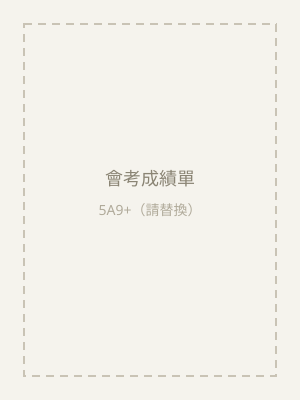
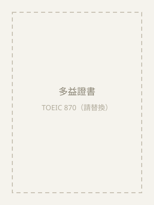
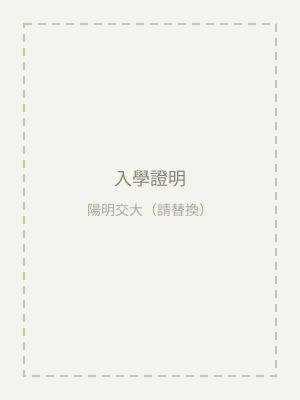
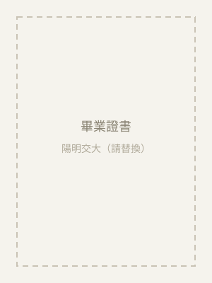

學歷經得起檢驗
陽明交大數據科學與工程研究所碩士生，資訊工程＋管理科學雙主修。在學／畢業證明、會考與多益成績單都可出示（見下方學歷證明）。
陽明交大數據科學與工程研究所碩士生，資訊工程＋管理科學雙主修。在學／畢業證明、會考與多益成績單都可出示（見下方學歷證明）。
會考 5A9+、寫作 5 級分、多益 870——這些不是天賦，是方法。我教的就是自己最近才驗證有效的讀書方式。
曾在一對一補習班教過國中數學，也帶過兩位國小學生學英文。孩子卡住時我會換個方式再講一次，直到真的聽懂。
沒有補習班老師多年的固定套路，反而能更彈性地因材施教。重點不是幫孩子解出這一題，而是讓孩子理解觀念、建立自己的思考方式。
直接用孩子的學校課本、講義與考卷教學，進度與段考同步；每堂課後也會用 LINE 簡短回報，家長隨時掌握狀況。
特別適合安排長期配合，協助孩子在寒暑假先修、提前準備下一階段內容，打好基礎，讓開學後的學習更順利。平日晚上、週末皆可彈性排課，段考前也能加課衝刺。
打好數字感與邏輯基礎，培養對數學的興趣，銜接國中不慌張。
觀念理解 → 題型拆解 → 段考與會考實戰。針對孩子的弱點章節補強，不用題海戰術硬撐。
高一、高二數學進度銜接；物理可依情況討論，歡迎先聊聊孩子的需求。
文法邏輯化、單字有系統地記。多益 870、雅思 6.5，從國小到高中都能陪讀。
Python／C++ 入門，訓練邏輯思維，也是未來升學與就業都用得到的能力。
教孩子正確使用 ChatGPT 等工具輔助學習——用來檢查觀念、練習提問，而不是拿來抄答案。
您請到的不只是一位家教，而是一位能用不同方式引導孩子思考的夥伴。
我的原則很簡單：先懂，再熟，最後才快。 死背可以應付一次小考，理解才撐得起會考。每個孩子卡住的點不一樣， 所以我依孩子目前的程度調整教法與進度，用學校的課本和考卷教， 並且把「怎麼複習、怎麼安排時間」一起教給孩子—— 家教的目的，是讓孩子最終能自己學。
所有資歷都有文件可查，家長可安心確認。




我目前確實還沒有長期的家教資歷，但曾在一對一補習班教過國中數學，也帶過兩位國小學生學英文。也正因為沒有補習班老師多年的固定教法，我反而更能彈性調整、貼近孩子的程度，重點放在讓孩子理解觀念、建立自己的思考方式，而不是背公式解題。會擔心的話，非常歡迎先安排一堂試教（300 元），用實際上課情況來判斷。
試教一堂 300 元。長期課程依年級與科目計費：國小、國中約 NT$400–600／小時；高中約 NT$400–600／小時起，依科目再議；程式、AI、資訊相關約 NT$400–600／小時起。因為我目前資歷較新，收費會比市面上資深老師更親切，但教學品質不打折，價格透明、不綁約、不推銷課程包。
可以，而且鼓勵這麼做。建議先安排一堂試教（300 元），讓孩子實際感受上課方式，也讓我了解孩子的程度與弱點。試教後您再決定是否長期配合，完全沒有壓力。
新竹市、竹北為主，可到府教學或約圖書館等公共空間。目前主要以實體教學為主，尚未提供線上課程。
不需要。我直接使用孩子的學校課本、講義與考卷教學，跟著學校進度與段考範圍走。若有需要，我會免費補充自製講義與練習題。
平日晚上與週末皆可，每週固定時段為主，段考前可彈性加課。確定配合後我會與家長約定固定時間，若需調課會提前告知。
每堂課後我會用 LINE 簡短回報：今天上了什麼、孩子的狀況、回家要完成的練習。段考後也會跟家長一起檢視成績與調整方向。
留下孩子的狀況，我會在 24 小時內回覆。也歡迎直接加 LINE 聊聊。